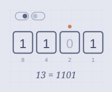
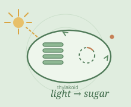

02 — FRESH FROM THE WORKSHOP
A few more
in the making.
Newer builds, still finding their final shape.
Watch them anyway — that is where the work shows.
These two are the newest lessons in the harness. Every scene is a real render — no placeholder
slides — but their visual review is still finishing, so they are published here as preview builds
rather than joining the three finished lessons on the home page.
-

04
COMPUTER SCIENCE · UNDERGRADUATE
Binary Numbers for Beginners
Two stable states. Places that double. A number you can read off the switches.
6 chapters1:451 practice
PREVIEW BUILD · REVIEW IN PROGRESS
Six chapters, a place-value animation, and a quick check on 1010.Preview build · review still running
-

05
BIOLOGY · GRADE 9
Photosynthesis: how a leaf turns light into sugar
Two stages, two places inside one chloroplast — and each one needs what the other returns.
6 chapters2:311 practice
PREVIEW BUILD · REVIEW IN PROGRESS
Light reactions, the Calvin cycle, and the loop that ties them together.Preview build · 4 of 7 scenes reviewed